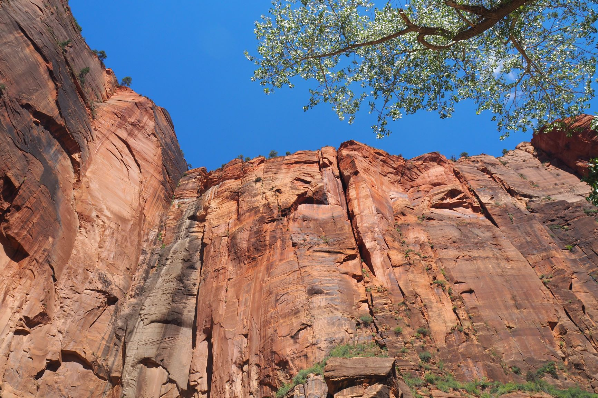
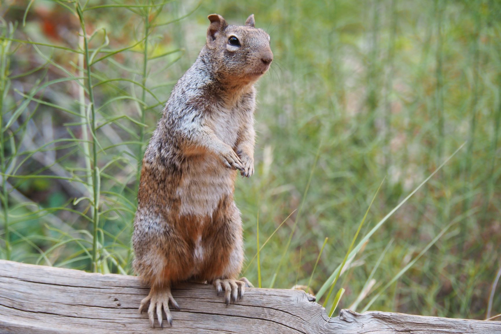
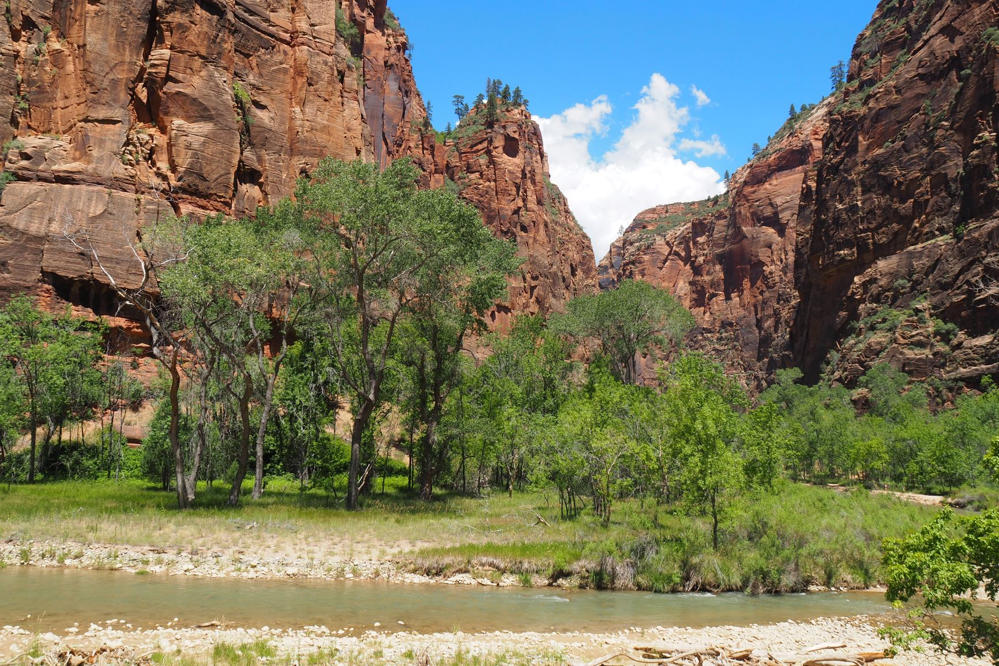
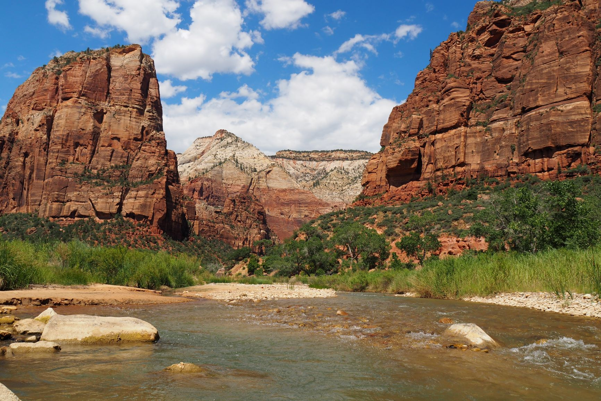

| Home | Yosemite National Park | Zion | Bryce Canyon | Monument Valley | Grand Canyon |
Een ander, veel kleiner, maar niet minder mooi park is Zion. Het mooie van Zion is, dat je er zeer goed kan fietsen. Althans, van boven naar beneden. Ook hier rijden weer shuttlebussen heen en weer. Voorop de bussen kan je je gehuurde fiets zetten. Als je je dan naar het eindpunt laat rijden (het hoogste punt) kun je vanaf dat punt prachtig in alle rust langzaam naar beneden fietsen. Zo kan je de prachtige natuur veel beter zien en heb je ook geen last van de drukte. Ook hier zijn weer schitterende wandelingen te maken. Een van de leukste wandelingen gaat dwars door het water. Soms loop je tot je middel in het water. Net als in Yosemite kom je veel eekhoorntjes tegen.Meer lezen.
   